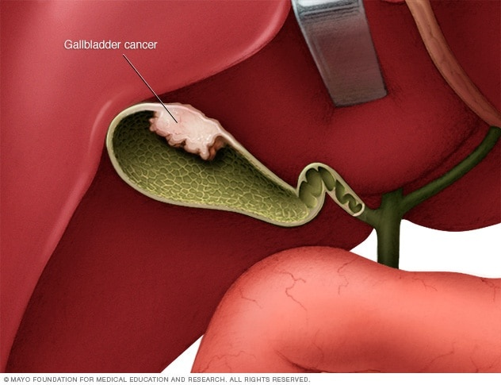

Gallbladder cancer

SYMPTOMS:
Gallbladder cancer signs and symptoms may include:
- Abdominal pain, particularly in the upper right portion of the abdomen
-
Abdominal bloating
-
Losing weight without trying
-
Yellowing of the skin and whites of the eyes (jaundice)
CAUSES
- It's not clear what causes gallbladder cancer.
-
Doctors know that gallbladder cancer forms when healthy gallbladder cells develop changes (mutations) in their DNA. A cell's DNA contains the instructions that tell a cell what to do. The changes tell the cells to grow out of control and to continue living when other cells would normally die. The accumulating cells form a tumor that can grow beyond the gallbladder and spread to other areas of the body.
-
Most gallbladder cancer begins in the glandular cells that line the inner surface of the gallbladder. Gallbladder cancer that begins in this type of cell is called adenocarcinoma. This term refers to the way the cancer cells appear when examined under a microscope.
DIAGNOSIS:
- Blood tests. Blood tests to evaluate your liver function may help your doctor determine what's causing your signs and symptoms.
-
Procedures to create images of the gallbladder. Imaging tests that can create pictures of the gallbladder include ultrasound, computerized tomography (CT) and magnetic resonance imaging (MRI).
TREATMENT
- What gallbladder cancer treatment options are available to you will depend on the stage of your cancer, your overall health and your preferences.
-
The initial goal of treatment is to remove the gallbladder cancer, but when that isn't possible, other therapies may help control the spread of the disease and keep you as comfortable as possible.